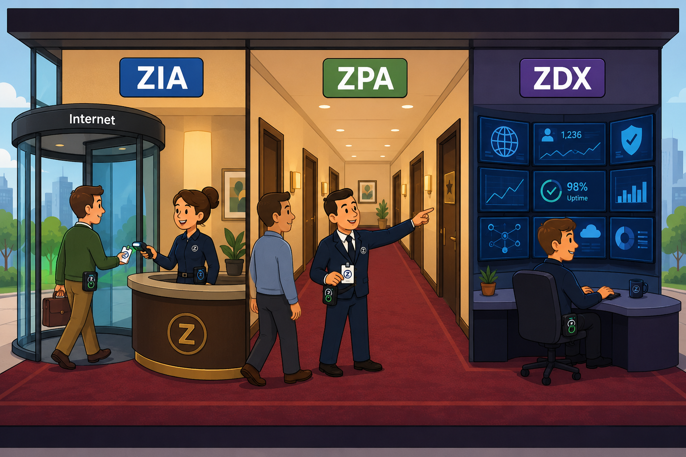
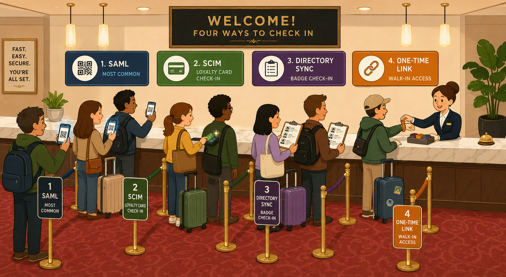
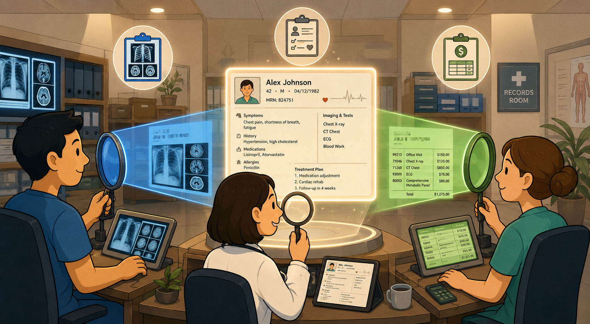
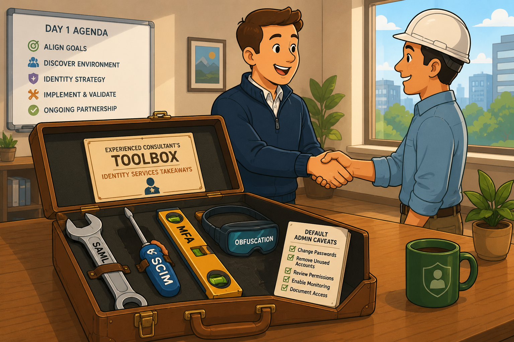

Recommended authentication and provisioning per service — SAML + SCIM for ZIA and ZPA, plus the unique first-time provisioning and role-based administration flow that ZDX uses.
Identity decisions ripple through every later phase.
Pilot tests, policy enforcement, group-based access, and SIEM correlation all depend on getting auth and provisioning right at the start. A weak identity decision in Phase 2 is the most expensive thing to fix in Phase 5.
💭THINK FIRST · OVERVIEW
Every Zscaler service depends on knowing who the user is — but each service answers that question slightly differently. Before reading on, think about why a single auth/provisioning approach can't simply be inherited across ZIA, ZPA, and ZDX without per-service consideration.
If SAML + SCIM is the recommended combination for both ZIA and ZPA, why does each service still get its own dedicated identity lesson rather than one shared chapter?
The Delivery Consultant's job is described as "designing and deploying ZIA, ZPA, and ZDX authentication and provisioning". Which of these three services produces the most consultant-time per engagement, and why?
The course says authentication is a prerequisite to the Pilot phase. What specifically can't you test in a pilot until identity is settled — and what's the cost of trying anyway?
Q1 — MODEL ANSWER
Each service exposes identity differently: ZIA uses identity for policy lookup on inline traffic; ZPA uses identity AND device posture to broker private app access through Connectors; ZDX has no user traffic but still needs admin identity for portal access and data scoping. Same primitives (SAML/SCIM), different consequences if you mis-configure — so each service gets its own design conversation.
Q2 — MODEL ANSWER
ZPA usually wins. ZPA's End-user auth + Admin portal auth are separate flows, SCIM gates the entitlement set, and SAML attribute mapping drives access policy criteria. ZIA is usually inherited from the existing IdP integration and just turned on. ZDX is mostly admin auth + role-based admin. ZPA simply has more moving parts.
Q3 — MODEL ANSWER
Without identity you can't validate any policy that references users, groups, departments, or device posture — which is almost every policy. You also can't test SCIM-driven entitlements, group-based DLP exceptions, or step-up auth flows. Trying to pilot before identity is settled means you're testing default-allow behaviour, not the real customer policy — and signing off on a pilot that doesn't reflect production.
COURSE OVERVIEW
Welcome to Identity Services
Identity Services is one section organised around a single thread: the recommended authentication and provisioning approach for each Zscaler service. The course covers what a Delivery Consultant (DC) must do for ZIA, ZPA, and ZDX identity — plus the unique first-time provisioning + role-based administration flow ZDX uses.
Five course objectives: Describe ZDDC tasks and related basic concepts · Explain the recommended authentication and provisioning method for ZIA · Describe the recommended approach for end-user and administrator portal authentication for ZPA · Explain first-time provisioning for ZDX admins · Define role-based administration for ZDX deployment.
🧠
MENTAL NOTE
3 DC tasks: ZIA user auth + provisioning; ZPA end-user + admin portal auth + provisioning; ZDX user auth + provisioning. Default recommendation across the board = SAML for auth + SCIM for provisioning. ZDX is the outlier (different first-time provisioning flow + RBA).
Analogy
Identity is the building's reception desk. ZIA is the desk in the lobby that scans you on the way out (internet-bound). ZPA is the concierge that personally escorts you to specific rooms (private apps). ZDX is the security cameras and dashboards in the back office — nobody walks through them, but they watch everything. Each desk needs the same staff badge system (SAML + SCIM) but the staff doing the checks have different jobs.

📷 A1.png — add this image to the folder
Flat minimalist cartoon illustration of a single corporate building with three different reception desks as an analogy for ZIA, ZPA, and ZDX identity. Wide composition cutaway view. Lobby desk on the left: a cheerful receptionist scanning a staff badge on a person walking outside through a revolving door labelled "internet" (ZIA). Concierge in the middle: a smartly-dressed concierge personally escorting a visitor down a hallway, holding their badge and pointing to one specific door among many (ZPA). Back-office monitoring station on the right: a friendly security analyst at a wall of glowing monitors watching dashboards full of vitals icons (ZDX). All three reception staff wear the same uniform with the same badge-scanning system on their belts. Warm interior lighting, plush carpet, cheerful round-faced characters. Clean geometric shapes, flat illustration style, bold outlines, simple cartoon characters, no text labels, no UI elements, educational infographic feel, modern tech-analogy aesthetic.
ASK A QUESTION
ADD A NOTE
💭THINK FIRST · QUICK RECAP
Identity concepts span Administrator (EDU-200) and Engineer (EDU-202). The administrator learns the primitives (auth/authz, SAML, SCIM, MFA, OIDC); the engineer learns the configuration depth (step-up auth, multi-IdP, hosted file fallback). The Delivery Consultant builds on both — but applies them under customer pressure.
If the EDU-200 administrator can configure SAML, and the EDU-202 engineer can configure step-up MFA — what specifically does the EDU-302 consultant add on top of those two?
OIDC was introduced as the modern alternative to SAML in EDU-202. Why does EDU-302 still recommend SAML as the default rather than OIDC?
"Identity Federation Using SAML" appears in both the authentication and provisioning method lists. How can the same technology be both? What's actually happening in each case?
Q1 — MODEL ANSWER
The consultant adds recommendation judgement: knowing when SAML auto-provisioning is appropriate vs SCIM, when to advise a customer to add SailPoint alongside Forgerock, when to phase in MFA vs step-up. The admin and engineer know how to configure; the consultant knows what to recommend, why, and how to defend it in a customer workshop.
Q2 — MODEL ANSWER
SAML is the more widely supported standard across enterprise IdPs and is universally compatible with Zscaler. OIDC is modern and lighter, but not all enterprise IdPs implement it consistently for the depth of attribute mapping ZPA policy needs. SAML's maturity + universal vendor support makes it the safer default — OIDC is reserved for greenfield deployments where the IdP is known to support it well.
Q3 — MODEL ANSWER
For authentication, SAML proves who the user is (signed assertion of identity at login). For provisioning, "Identity Federation Using SAML" usually refers to SAML Auto-Provisioning (Just-In-Time) — the assertion's metadata (groups, departments, email) is read and used to create the user record in Zscaler on first login. Same protocol, two different uses: identity proof vs. identity birth.
QUICK RECAP
Recap from EDU-200 + EDU-202
Identity Services in EDU-302 builds directly on what was covered earlier. Before diving into recommendations, refresh the foundation:
From EDU-200 Administrator — 10 core identity primitives
Authentication — verifying user identity by username/password, biometric, etc.
Authorization — granting/denying access to resources (apps, networks, hardware)
Identity Provider (IdP) — system that authenticates users, identifies them, and authorises access by managing/verifying credentials
Service provider (SP) — system that receives users' identity credentials from an IdP and uses that to grant access
SAML — common, language-independent two points for information about who you are and what you're allowed to access
OIDC — authentication protocol on top of OAuth 2.0; provides single sign-on
ZIdentity — central identity service for Zscaler products; centralised platform managing admin roles + entitlements across all Zscaler services
User group — a logical entity that includes several users
Audit logs — records of activities performed by users in the ZIdentity Admin Portal
From EDU-202 Engineer — SAML workflow + advanced concepts
The SAML authentication workflow (SP-initiated):
1
Request is made for an application.
2
Users are redirected to authenticate at either Zscaler Internet Access or Zscaler Private Access.
3
SAML authentication request is sent to the SAML identity provider.
4
User is challenged by the identity provider to authenticate. Auth can be a simple username and password, Kerberos, or multifactor authentication.
5
Identity provider assembles the SAML assertion and cryptographically secures it using a digital signature. The SAML assertion is delivered to the service provider via the user's browser.
6
Service provider validates the digital signature to ensure it came from a trusted source and that the data wasn't tampered with in transit.
7
Zscaler issues an auth token (Zscaler Client Connector or a cookie to the user's browser) depending on what client type is being used.
8
User is authenticated at Zscaler. User's request for the application can now resume via the Zscaler Zero Trust Exchange.
Other concepts introduced in EDU-202
OIDC — a modern alternative to SAML built on OAuth 2.0
Step-up authentication — an additional auth factor enforced when accessing sensitive resources or when compliance mandates it
External identity providers — connecting more than one IdP to support contractors, M&A scenarios, or partner populations
Admin SSO — federated authentication for the admin portal, separate from end-user auth
Password policies — fallback policy controls for hosted-DB users and break-glass accounts
🧠
MENTAL NOTE
EDU-200 = identity primitives (10 concepts). EDU-202 = SAML workflow (8 steps), OIDC, step-up auth, multi-IdP, hosted file fallback, password policy. EDU-302 builds recommendation judgement on top — what to suggest to a customer and why.
ASK A QUESTION
ADD A NOTE
💭THINK FIRST · DELIVERY CONSULTANT TASKS
Before recommending an auth method to a customer, the consultant has to know the menu — 7 authentication methods, 5 provisioning methods, and the reasons each one exists. Most engagements end up recommending the same two (SAML + SCIM), but knowing the alternatives is what makes the recommendation defensible.
If SAML + SCIM is "the answer" almost every time, why does Zscaler list 7 authentication methods including Zscaler Authentication Bridge, One-Time Token, and Passwords? In what scenario would each become the right answer?
Hosted User Database appears as a provisioning method. Under what customer constraint would you ever recommend it over SCIM?
Authentication and provisioning are described as "crucial because Zscaler Client Connector pilot testing depends on it". What does the Client Connector specifically need that other testing paths don't?
Q1 — MODEL ANSWER
Each fits a real edge case. Kerberos = pure Windows-on-corporate-network. Directory Sync = customers with an existing on-prem AD they're not ready to expose. Zscaler Authentication Bridge = legacy customers that need on-prem auth without exposing their directory. One-Time Link / Token = guest networks, kiosks, contractors. Passwords = small deployments or fallback. The 7 methods aren't equally recommended — but each removes a reason to say "no" to a customer.
Q2 — MODEL ANSWER
Hosted User Database is the answer when the customer has no usable IdP, can't deploy SCIM, and has only a small / static user list to manage. Think small businesses, lab tenants, contractor pools, or migration interim states. It's a manual, file-based fallback — not scalable but useful when nothing else exists.
Q3 — MODEL ANSWER
Zscaler Client Connector establishes a SAML-authenticated tunnel from the user's device to the Zero Trust Exchange. Without working SAML auth, the Client Connector can't establish that tunnel, which means no traffic forwarding, which means you can't pilot test policy enforcement on real devices. Browser-based testing via PAC file might work without it, but the production deployment path almost always uses Client Connector.
DELIVERY CONSULTANT TASKS
Tasks & Basic Concepts
Three tasks every DC owns
ZIA user authentication and provisioning
ZPA user authentication and provisioning, including user authentication and administrator portal authentication
ZDX user authentication and provisioning
Why authentication & provisioning matter
The Zscaler service depends on auth + provisioning to identify users, decide what policies apply, which group they belong to, and whether a user's access needs to be updated or deprovisioned. Once authentication is set up, you can start using Zscaler Client Connector to test policy applications with a pilot test group — pilot is gated by identity being right.
The recommended approach
Default recommendation: Zscaler recommends SAML for authentication and SCIM for provisioning. Other options are available — and become the right answer in specific customer constraints — but SAML + SCIM is the starting point of every engagement.
Authentication menu — 7 methods
Identity Federation Using SAML
Default recommendation. Federated identity via an enterprise IdP (Okta, Entra ID, Ping, ADFS, etc.).
Kerberos Authentication
For Windows-on-corporate-network environments. Single sign-on inside the AD domain.
Directory Server Synchronization
Sync user accounts from an on-prem directory (typically AD). Useful when IdP is not in scope.
Zscaler Authentication Bridge
On-prem helper for legacy environments that can't expose their directory to a cloud IdP.
One-Time Link
Email-delivered link for guest / kiosk / contractor scenarios. No persistent credential.
One-Time Token
Short-lived token; used in lightweight onboarding or temporary-access scenarios.
Passwords
Fallback only. Small deployments or interim states.
Provisioning menu — 5 methods
SCIM
Default recommendation. Real-time API-based user/group sync from IdP.
Identity Federation Using SAML
SAML Auto-Provisioning (Just-In-Time) — provision on first login from assertion metadata. Second preference.
Hosted User Database
Manual, file-based. For environments with no usable IdP or small static user lists.
Directory Server Synchronization
Pull from on-prem AD. Useful when the customer is not ready to cloud-host identity.
Zscaler Authentication Bridge
On-prem helper that proxies between the customer's directory and Zscaler.
🧠
MENTAL NOTE
3 DC tasks (ZIA / ZPA / ZDX) — same goal, different shapes. 7 auth methods, 5 provisioning methods. SAML + SCIM is the default. The other methods exist to remove a reason the customer can't proceed.
Analogy
The auth/provisioning menu is like a hotel front desk's check-in options. Most guests use the QR code on their phone (SAML). VIP loyalty members swipe a permanent card (SCIM-synced from the loyalty system). Conference attendees get a printed badge from a list (Directory Sync). Walk-ins get a one-time wristband (One-Time Link). The point isn't to use everything — it's so no guest has to be turned away because their preferred check-in method isn't available.

📷 A2.png — add this image to the folder
Flat minimalist cartoon illustration of a hotel front desk with multiple check-in options as an analogy for the auth/provisioning method menu. Wide composition. Long marble check-in counter with a smiling receptionist. Four queues of guests approach with four different check-in tools: Queue 1 (most common) holds up phones with glowing QR codes (SAML); Queue 2 swipes shiny loyalty cards into a reader (SCIM); Queue 3 carries printed conference badge sheets in clipboards (Directory Sync); Queue 4 has casual walk-in guests receiving one-time wristbands from the receptionist (One-Time Link). Cheerful round-faced characters, suitcases at their feet, soft warm lobby lighting, plush carpet, plant in the corner. Mood of friendly efficiency. Clean geometric shapes, flat illustration style, bold outlines, simple cartoon characters, no text labels, no UI elements, educational infographic feel, modern tech-analogy aesthetic.
ASK A QUESTION
ADD A NOTE
💭THINK FIRST · ZIA AUTH & PROVISIONING
SCIM is recommended for ZIA — but Zscaler explicitly says don't enable SAML provisioning AND SCIM sync at the same time. Before reading on, think about what would actually go wrong if both were on simultaneously, and why the recommendation is "pick one".
If SCIM sync is real-time and SAML Auto-Provisioning is on-first-login, running both seems redundant rather than destructive. Where's the actual conflict?
SCIM sync intervals vary by IdP — Azure syncs every 40 minutes, PingId every 1 minute. What's the operational consequence of that difference for a Delivery Consultant in a customer workshop?
SAML Auto-Provisioning's main benefit is "no firewall rules required". Why is that benefit relevant — what firewall change does SCIM require that SAML JIT avoids?
Q1 — MODEL ANSWER
Both methods write user records into Zscaler's directory — but they can disagree about what the truth is. SAML Auto-Prov writes whatever's in the assertion at login time; SCIM writes whatever the IdP's directory says, on a schedule. If a group membership changes between SCIM syncs but the user logs in via SAML and gets a stale assertion, the two states diverge — policies fire based on whichever version of "truth" was written last. The fix is to pick one.
Q2 — MODEL ANSWER
For an Azure-IdP customer, a group change applied at 9:00am may not reach Zscaler until 9:40am — so policy exceptions, group-based DLP, and entitlement changes have an up-to-40-minute lag. For PingId customers it's effectively real-time. The DC needs to set the customer's expectations explicitly and design pilot tests that account for the lag, otherwise pilot reports a "broken" policy that's actually just unsynced.
Q3 — MODEL ANSWER
SCIM requires an outbound channel from the customer's IdP (or a SCIM enforcer) to Zscaler's SCIM endpoint — sometimes through a firewall that wasn't expecting it. SAML Auto-Provisioning rides on the existing SAML SSO traffic (already user-initiated browser HTTPS), so no new firewall path. For tightly controlled networks, that "no new hole" is the deciding factor.
ZIA USER AUTHENTICATION & PROVISIONING
The Recommended Approach for ZIA
For ZIA, the recommended authentication method is Identity Federation using SAML, and the recommended provisioning method is SCIM.
SCIM — the first choice for provisioning
Benefits
Requirements
Limitations
Real-time updates
SCIM 2.0 IdP
Sync before auth
Benefits
When group/department membership changes, the Zscaler user database is updated automatically in near real-time
No inbound connections required from Zscaler to the customer's directory — the SCIM sync process interacts directly with Zscaler
Integration with major IdPs simplified through Zscaler technology partners
Requirements
If customer wants a cloud-based IdP, it should support SCIM 2.0
SCIM may require a different IdP when SAML auth is not provided/supported with certain IdP providers (e.g. SailPoint for SCIM sync + Forgerock for SAML authentication)
Limitations
Synchronization must occur before anyone can authenticate — plan before activation
Synchronization interval is controlled by the SCIM enforcer
Some IdP vendors don't support SCIM provisioning
Near-real-time but with delay: Azure ≈ 40 min, PingId ≈ 1 min
!
NEVER ENABLE BOTH
Users and groups are provisioned via APIs. Zscaler's recommendation is not to have SAML provisioning and SCIM sync enabled at the same time — the two methods can disagree about the current state of group membership, producing inconsistent policy enforcement.
SAML Auto-Provisioning (Just-In-Time) — the second preference
SAML Auto-Provisioning is the second preferred provisioning method. Do not confuse it with SAML authentication. When a user logs into a Zscaler service for the very first time, the SAML authentication metadata is used to provision the user in the Zscaler database. SAML auto-provisioning retrieves user, group, and department information from the SAML response and adds it to the database. Subsequent SAML authentications do not trigger provisioning for the same user.
Benefits
No firewall rules required to specifically handle SAML Auto-Provisioning
Requirements
Configure SAML on the IdP as well as Zscaler side
Availability of a cloud-based identity provider in the region (if customer decides to use it)
Limitations
Users must re-authenticate for changes in group membership or disabled accounts
Users are not provisioned until they are authenticated
Zscaler recommends not having SAML provisioning and SCIM sync enabled at the same timestamp
🧠
MENTAL NOTE
ZIA = SAML auth + SCIM provisioning (primary). SCIM sync interval is IdP-controlled: Azure ≈ 40 min, PingId ≈ 1 min. SAML Auto-Prov (JIT) is the 2nd preference and the right answer when SCIM is blocked by firewall constraints or unsupported by the IdP. Never enable both simultaneously.
ASK A QUESTION
ADD A NOTE
💭THINK FIRST · ZPA AUTH & PROVISIONING
ZPA has two separate authentication flows — end-user authentication (used to access private apps) and admin portal authentication (used to configure ZPA itself). Before reading on, think about why those two flows exist as separate concerns and what would go wrong if they were collapsed into one.
If the same person can both use ZPA-protected apps AND configure them as an admin, why does ZPA insist on two separate authentication flows for those two activities?
"ZPA Entitlement" governs who has access to ZPA. By default all users provisioned via SCIM get ZPA access. Why is that the default rather than a more conservative "no one gets access until enabled"?
SAML attributes (groups, departments, email) become ZPA policy criteria. What's the design implication if a customer's IdP doesn't expose the group attribute the consultant wants to use?
Q1 — MODEL ANSWER
End-user auth happens millions of times a day; admin auth happens dozens. Mixing them means an end-user session with a stolen cookie could potentially reach admin functions — collapsing the auth flow collapses the security boundary. Separation lets you enforce stricter MFA, dedicated admin accounts, and least-privilege role assignment on the admin path without overburdening every end-user login.
Q2 — MODEL ANSWER
The default exists because most customers want frictionless rollout: anyone in the IdP gets access to whatever ZPA exposes. Reversing the default to "explicit enable" would mean manually enabling every user — death by a thousand tickets. The customer can still restrict access at the entitlement level (specific groups/users), and most do — but the default optimises for adoption.
Q3 — MODEL ANSWER
If the IdP doesn't expose the required attribute, ZPA policy can't reference it — meaning a customer can't write a policy like "Marketing group can access Salesforce". The consultant has two paths: ask the IdP team to add the attribute to the SAML assertion (slow), or import attributes manually / in bulk via the admin portal (faster but maintenance burden). The early-design question "which IdP attributes will be exposed?" usually surfaces this before it becomes a Pilot-phase blocker.
ZPA USER AUTHENTICATION & PROVISIONING
The Recommended Approach for ZPA
ZPA user authentication and provisioning comprises two distinct flows: end-user authentication (used by users to reach private applications) and administrator portal authentication (used by admins to configure ZPA). The recommended approach handles them separately.
End-user authentication — the recommended approach
Users must first authenticate into the Zscaler Client Connector using any SAML 2.0–compliant IdP with the Service Provider–Initiated (SP-Initiated) mode to access applications via ZPA. As a delivery consultant, you need to configure the IdP to recognise Zscaler as a valid SP, and you must configure the full details for the IdP within the ZPA administrator portal. You can add up to 10 IdP configurations for SSO.
Three configuration tasks for end-user auth
Enable Multi-Factor Authentication (MFA) at the IdP configuration level for end-user authentication
Clearly define user groups based on the access privileges to facilitate policy configuration
Use SCIM provisioning to automate the user management
SP-initiated SAML model — 6 steps
1
A user tries to access a resource or secure part of an application on the SP's website.
2
The SP checks if the user is authenticated. If not, the user is redirected to the IdP's login page.
3
The user enters their credentials and the IdP authenticates their identity.
4
The IdP sends the SAML response and assertion, and creates a session for the user.
5
The SP receives the SAML response and assertion, and creates a session for the user.
6
The user can now access the application or resource, and any other apps whose policy lets them — for the duration of the session.
Understanding SAML Attributes in ZPA
To authenticate users utilising the recommended approach, you will need to use SAML attributes. SAML attributes are fundamental building blocks of ZPA Access Policy. As an example, SAML attributes include information about groups the user belongs to. This information can be utilised to provide granular identity-based access to specific applications. As a delivery consultant, you must configure SAML attributes that will be sent from an IdP to use them when defining policy access criteria. For example, if you want to define users by your policies using email addresses and SAML attributes, you must configure the users' email addresses, SAML attributes in the ZPA administrator portal.
You can configure SAML attributes using one of the following methods:
Import SAML attributes
Manually add SAML attributes
ZPA Entitlement
Entitlement governs who has access to ZPA. ZPA does not depend on a provisioning method to determine a user's access. It relies on the SAML attributes received from the IdP perspective done in two steps:
· On the IdP side, the ZPA service provider needs to be provisioned with the users/groups that will utilise ZPA.
· In the Zscaler Client Connector mobile portal, ZPA entitlement is disabled by default. When enabling ZPA for users, you can enable it for all users or select from a list of user groups.
★
RECOMMENDATION
Zscaler's recommendation is to configure and turn SCIM sync on. This allows you to selectively import much quicker for policies that depend on SCIM-synced attributes. In large-scale deployments where SCIM sync is turned on, it can take some time to synchronise the user accounts with ZPA. For example, when 50,000 users are synced initially, it may take a few days to complete.
Administrator portal authentication
In addition to end-user authentication, it is a recommended practice to configure administrators as part of the ZPA deployment. ZPA initially provides a default administration account for customer's organisation. For example, poweradmin@<customer-org>.domain.com or admin@<organization>.domain.com.
i
WHEN CONFIGURING ADMINS
You can configure as many additional admins as necessary. For each admin, you can choose a predefined role or create a custom role. While configuring admin accounts, ensure to follow recommendations listed below:
· Reserve the primary account (poweradmin@<customer>.com) as the emergency access account
· Create a dedicated admin portal account for each administrator
· Administrators must not share the same login credentials
· Configure the administrator's roles based on principle of least privilege
· Regularly review the audit log to monitor the admin portal activity
The principle of least privilege (PoLP) is an information security concept that states that users and applications should only have access to the data and operations they need to perform their jobs.
🧠
MENTAL NOTE
ZPA has 2 auth flows: end-user (SAML 2.0 via Client Connector, MFA at IdP, SCIM provisioning) and admin portal (dedicated accounts per admin, no shared creds, least privilege, 2FA + IdP SSO with MFA). ZPA can have up to 10 IdP configurations for SSO. ZPA Entitlement = "who actually gets ZPA". Initial SCIM sync of 50,000 users can take days.
Analogy
ZPA's two auth flows are like a museum with two entrances. The front entrance (end-user auth) is wide, well-lit, and processes thousands of visitors with quick badge scans. The staff entrance at the back (admin portal auth) is small, has a biometric lock, requires a named individual badge per person, and logs every single entry. Same building, same staff, same exhibits — but the way you get in depends on what you came to do.
📷 A3.png — add this image to the folder
Flat minimalist cartoon illustration of a museum with two contrasting entrances as an analogy for ZPA's end-user vs admin portal authentication. Wide composition split into two scenes. Left scene (visitor / front entrance): a grand neoclassical museum facade with tall columns and a wide welcoming staircase. A cheerful queue of visitors swipes phones at quick badge readers, smiling and entering. Banners overhead. Sun shining, busy mood. Right scene (staff / back entrance): the same building from the side — a small unmarked metal door with a glowing biometric scanner. A single staff member in a smart uniform places a thumb on the reader, badge clipped to their lapel, while a tiny security camera silently logs the event. Cool calm evening light, mood of careful procedure. Clean geometric shapes, flat illustration style, bold outlines, simple cartoon characters, no text labels, no UI elements, educational infographic feel, modern tech-analogy aesthetic.
ASK A QUESTION
ADD A NOTE
💭THINK FIRST · ZDX AUTH + RBA
ZDX is the outlier — it doesn't have user-facing traffic at all, so its authentication conversation is mostly about admin access and role separation. The first-time provisioning step is also unusual: it depends on a Zscaler Support ticket. Before reading, think about why ZDX is the only Zscaler service that bootstraps through Support.
For ZIA and ZPA you can self-serve initial admin setup; for ZDX the first admin is created by Zscaler Support sending an email. Why is the bootstrap pattern different?
Role-Based Administration in ZDX lets you "assign admins to multiple or specific roles with varying levels of access" AND "provide obfuscation permissions". What's the use case for obfuscation specifically — and what makes ZDX need it more than ZIA?
The default admin user is "not recommended for day-to-day use" but "will still exist". Why not just delete it after the first real admin is set up?
Q1 — MODEL ANSWER
ZIA and ZPA arrive with a default admin and the customer goes from there. ZDX's tenant has historically required tighter initial validation — Support creates the first admin, sends a password-reset email, and tracks the bootstrap. This is essentially a control gate during onboarding, because ZDX exposes user-level experience data that's sensitive in a different way (productivity surveillance optics, HR concerns, regional privacy law). The Support-driven bootstrap is a deliberate friction point.
Q2 — MODEL ANSWER
Obfuscation hides user-identifying information from certain admin roles. Use case: a regional NOC engineer needs to troubleshoot performance issues but isn't entitled to know which specific employee is suffering. ZDX needs obfuscation more than ZIA because ZDX dashboards are user-by-user by design — it's the only Zscaler service where "Bob in Marketing is having a bad time" is a first-class metric. ZIA shows traffic; ZDX shows people.
Q3 — MODEL ANSWER
Deletion would lose the ability to "break-glass" recover the tenant if all custom admin accounts are accidentally locked out or deleted. The default admin persists as an emergency-only path — not used day-to-day, not tied to a real person, but available if the new admin setup goes wrong. The same logic applies to ZPA's poweradmin@ account.
ZDX USER AUTHENTICATION + ROLE-BASED ADMINISTRATION
The Recommended Approach for ZDX
You may need to assist customers in provisioning first-time ZDX admins. ZDX configuration doesn't require a separate authentication and provisioning step from the customer's organisation — the first step in ZDX configuration is users (auth + admin setup). It is possible to add admins in ZDX who are also admins in ZIA.
First-time provisioning for ZDX admins
As a delivery consultant, you may need to assist customers to provision admins in ZDX. The first step in provisioning admins is to reach out to Zscaler customer support. Support will set up a default admin role for you and send an email requesting the password be reset for that role. After successful password reset, you can act as the first default admin to log in and begin creating other admins and roles for ZDX.
!
DEFAULT ADMIN CAVEAT
As default admin, you will be able to see all functions in the ZDX admin portal. This default admin role is not recommended for day-to-day use. The default admin user will still exist but is not recommended for further use. Treat it like a break-glass account.
Role-Based Administration for ZDX deployment
ZDX Role-based administration enables you to:
Organise and manage administration roles for specified responsibilities and permissions
Assign admins to multiple or specific roles with varying levels of access
Provide obfuscation permissions to limit functionalities as required
Obfuscation in ZDX hides user-identifying information from certain admin roles. It exists because ZDX dashboards are user-by-user by design — the only Zscaler service where individual experience metrics are first-class data. Obfuscation lets a NOC engineer troubleshoot patterns without seeing identifying details about the affected employees.
🧠
MENTAL NOTE
ZDX bootstrap: Zscaler Support sets up default admin → password reset email → use default admin to create real admins → keep default admin as break-glass. Role-Based Administration capabilities: organise roles, multi-role assignment, obfuscation permissions (unique to ZDX because of user-level experience data).
Analogy
ZDX RBA with obfuscation is like a hospital's electronic health record system. A radiologist needs to read the scan but doesn't necessarily need to know the patient's name (obfuscation). The treating doctor sees everything. The billing clerk sees costs but not symptoms. Same data, different views per role — because the data is intrinsically personal. ZDX is the same: experience metrics are tied to specific employees, and not every admin needs to see who.

📷 A4.png — add this image to the folder
Flat minimalist cartoon illustration of a hospital records room with role-based views as an analogy for ZDX role-based administration with obfuscation. Wide composition. Centre of the room: a single glowing patient chart hovering above a circular table. Around the table sit three different specialists at three small workstations, each looking at the same chart through a different coloured filter or lens. Radiologist (left): looks through a blue lens — sees only the X-ray and scan portion of the chart, the patient name area is fuzzed out / pixelated (obfuscation). Treating doctor (middle): looks through a clear lens — sees the full chart with name, symptoms, history, treatment plan, everything. Billing clerk (right): looks through a green lens — sees only cost columns and procedure codes; patient name is similarly fuzzed out. Cheerful round-faced characters in scrubs/coats, clipboard icons floating around, soft warm clinical lighting, mood of careful collaboration. Clean geometric shapes, flat illustration style, bold outlines, simple cartoon characters, no text labels, no UI elements, educational infographic feel, modern tech-analogy aesthetic.
ASK A QUESTION
ADD A NOTE
💭THINK FIRST · RECAP
You've now seen ZIA, ZPA, and ZDX identity end-to-end. The recurring recipe is SAML for auth, SCIM for provisioning, MFA at the IdP — but the consultant's value is knowing when to deviate from the recipe.
Of the five learning outcomes, which one is the hardest to assess on paper but the most important in a customer workshop?
Looking at the full picture — ZIA SAML+SCIM, ZPA two-flow auth, ZDX Support-bootstrap + RBA — which service's identity setup is the most fragile if the customer changes IdPs mid-deployment?
If you were teaching this section to a new consultant in 90 seconds, what's the single sentence about each service's identity approach you'd lead with?
Q1 — MODEL ANSWER
"Describe the recommended approach for end-user and administrator portal authentication for ZPA". It's two flows, with multiple sub-decisions (MFA placement, attribute mapping, entitlement scoping, admin role design). The bullet form on paper is innocuous; in a workshop a customer will probe each sub-decision and the consultant's reasoning shows.
Q2 — MODEL ANSWER
ZPA is most fragile. Its policy fabric directly references SAML attributes from a specific IdP. Switching IdPs mid-deployment means re-mapping every attribute, re-establishing the SCIM connection, possibly re-importing groups. ZIA largely just needs a new SAML SSO target; ZDX admin is decoupled from end-user IdP entirely. ZPA loses the most when the IdP changes.
Q3 — MODEL ANSWER
ZIA: "SAML for auth, SCIM for provisioning, never both provisioning methods at once." ZPA: "Two auth flows — end-user via SAML+MFA+SCIM, admin portal with named accounts under least privilege." ZDX: "Support bootstraps a default admin, then RBA with obfuscation lets you split user-level visibility by role."
RECAP & RESOURCES
In Summary
You learned the tasks and best practices that delivery consultants should be aware of while designing and deploying ZIA, ZPA, and ZDX authentication and provisioning methods. You also covered ZDDC tasks, recommended authentication and provisioning method for ZIA, recommended approach for end-user and administrator portal authentication for ZPA deployment, first-time provisioning for ZDX admins, and role-based administration for ZDX deployment.
From this course, you should now be able to:
Describe ZDDC tasks and the related basic concepts
Explain the recommended authentication and provisioning method for ZIA
Discuss the recommended approach for end-user and administrator portal authentication for ZPA deployment
Explain first time provisioning for ZDX admins
Define role-based administration for ZDX deployment
🧠
MENTAL NOTE
The 90-second pitch — ZIA: SAML + SCIM, never both provisioning methods. ZPA: end-user (SAML 2.0 + MFA + SCIM) + admin portal (dedicated accounts, least privilege). ZDX: Support bootstrap → RBA with obfuscation. Across all three: SCIM real-time but interval-driven (Azure 40min, PingId 1min); 50,000 users initial SCIM can take days.
Analogy
Identity Services is the consultant's "first-day-on-site" survival kit. The toolbox has the same five tools in every customer engagement — but knowing which tool to pull out, when, and why is the difference between a thirty-minute conversation and a thirty-day delay.

📷 A5.png — add this image to the folder
Flat minimalist cartoon illustration of an experienced consultant's toolbox as an analogy for the identity services takeaways. Wide composition. Foreground: a worn-leather rectangular toolbox lying open on a polished wooden customer-site desk. Inside the toolbox: a labelled SAML wrench, a SCIM screwdriver, an MFA spirit level, a small obfuscation visor, and a folded checklist (default admin caveats). A cheerful consultant in business-casual stands behind the desk in mid-handshake with a customer wearing a hard hat — they're choosing the SCIM screwdriver. Background: a softly out-of-focus customer office with a whiteboard showing a "Day 1" agenda. Warm afternoon light through a window, mood of confident mentorship. Clean geometric shapes, flat illustration style, bold outlines, simple cartoon characters, no text labels, no UI elements, educational infographic feel, modern tech-analogy aesthetic.